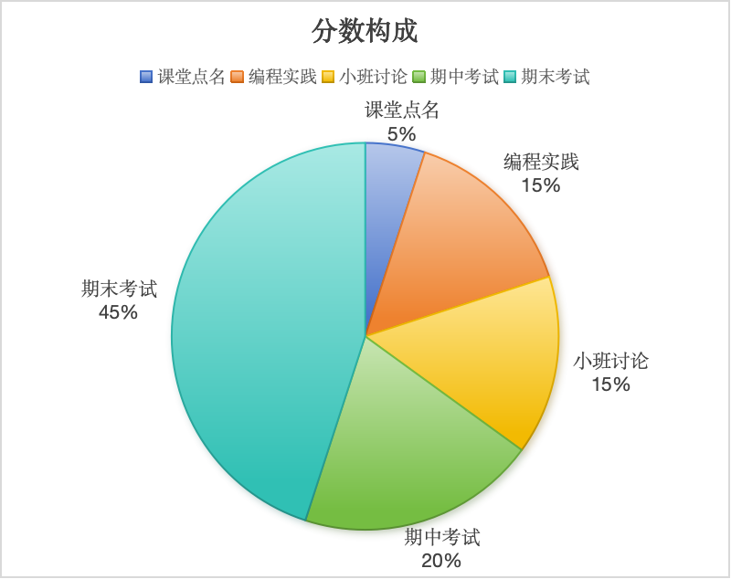

课程介绍
课程基本信息
| 开课单位 | 计算机学院 | 课程代码 | DZ191XK24 |
| 课程名称 | 算法设计与分析 | 英文名称 | Algorithm Design and Analysis |
| 课程性质 | 专业选修课程（限选） | 学分 | 3.0 |
| 总学时 | 48 | 先修课程 | 数据结构与算法 |
| 开课学期 | 春季学期 | 适应专业 | 软件工程 |
课程概述
计算机算法作为计算机解决实际问题的主要手段，是软件工程专业学生需要掌握的核心技能之一。算法设计与分析课程在数据结构课程的基础上，进一步剖析各类主要算法的问题描述、主要思想、基本原理和应用场景，使得学生不仅能掌握当前主要算法技术的工作原理，而且能理解该算法产生的背景和设计理念，使其能灵活运用这些技术，结合实际情况设计合适的算法解决问题。
时间地点
| 软件2401班、软件2402班课程授课 |
湖南大学 南校区 研B203 |
1-14周：星期一3-4节(10:00-11:40)
|
| 湖南大学 南校区 研B204 |
9-14周：星期四1-2节(8:00-9:40)
|
| 软件2401班小班讨论 |
湖南大学 南校区 研A108 |
9、15周：星期三5-6节(14:30-16:00)
|
| 软件2402班小班讨论 |
湖南大学 南校区 研A108 |
9、15周：星期三7-8节(16:10-17:40)
|
评分规则
课程最终成绩由三部分组成：
